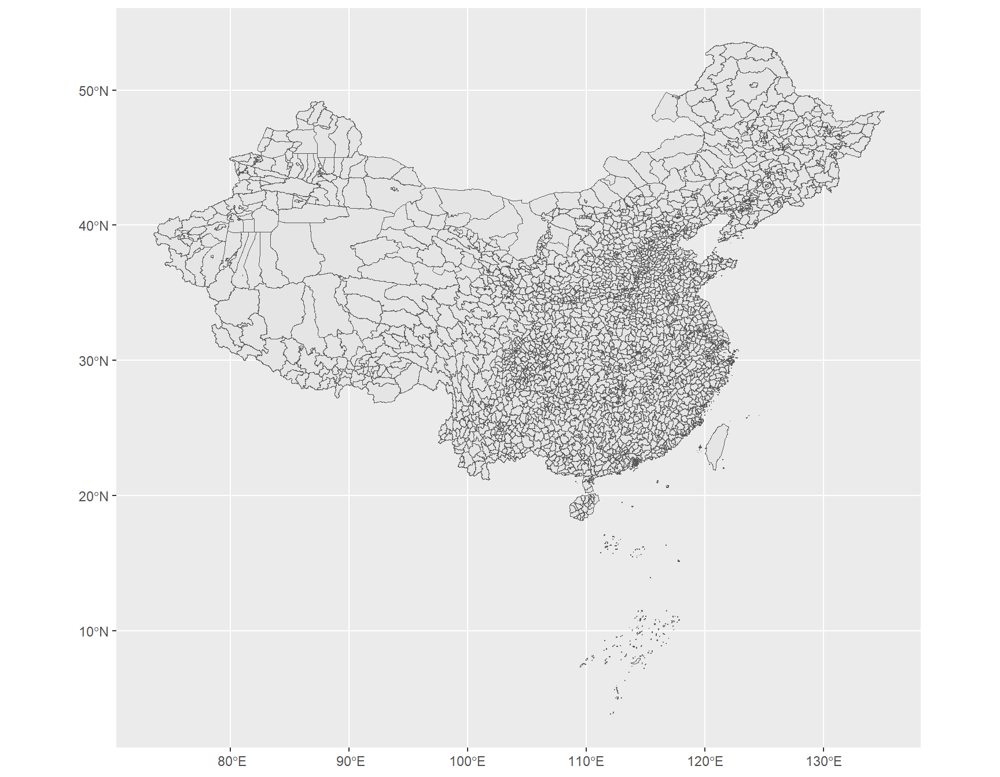
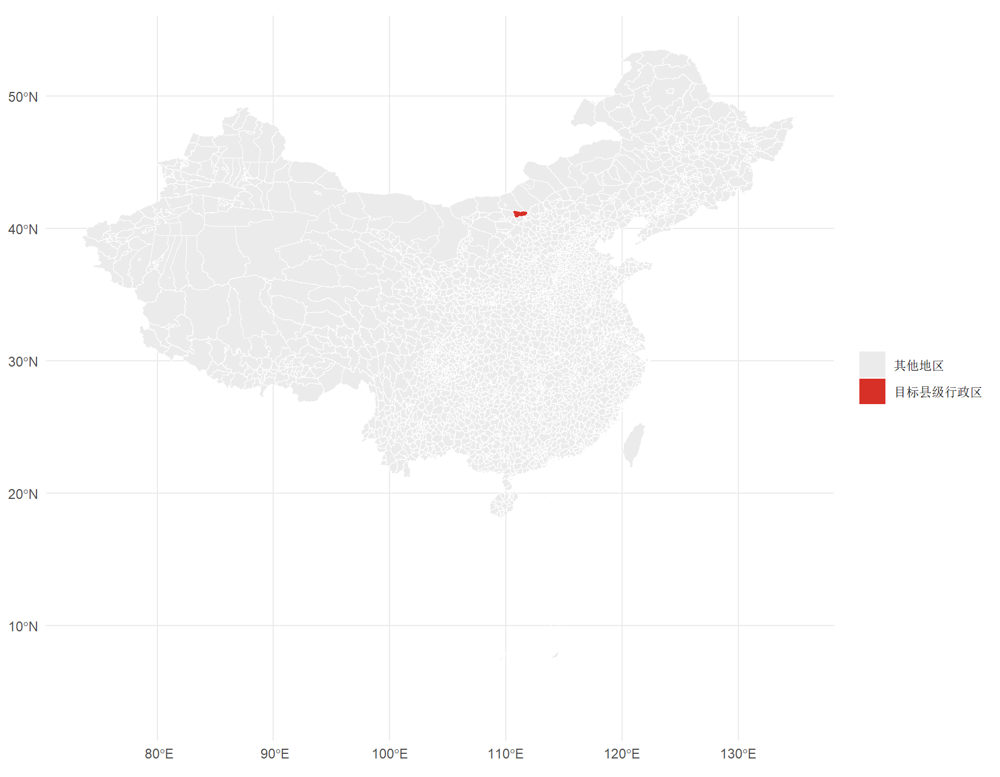
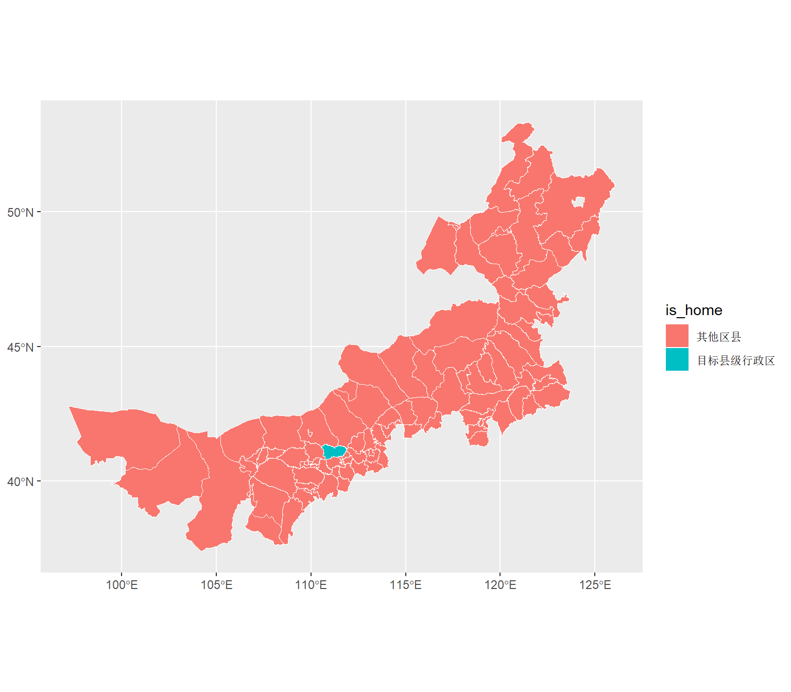
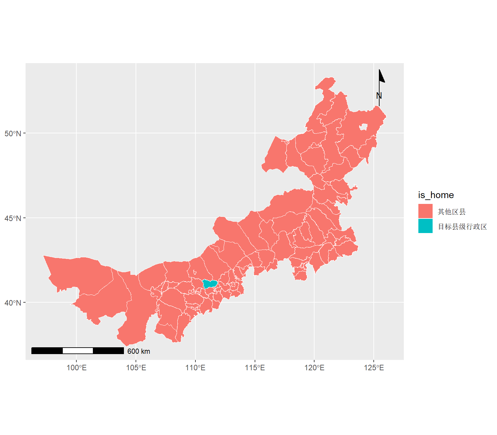
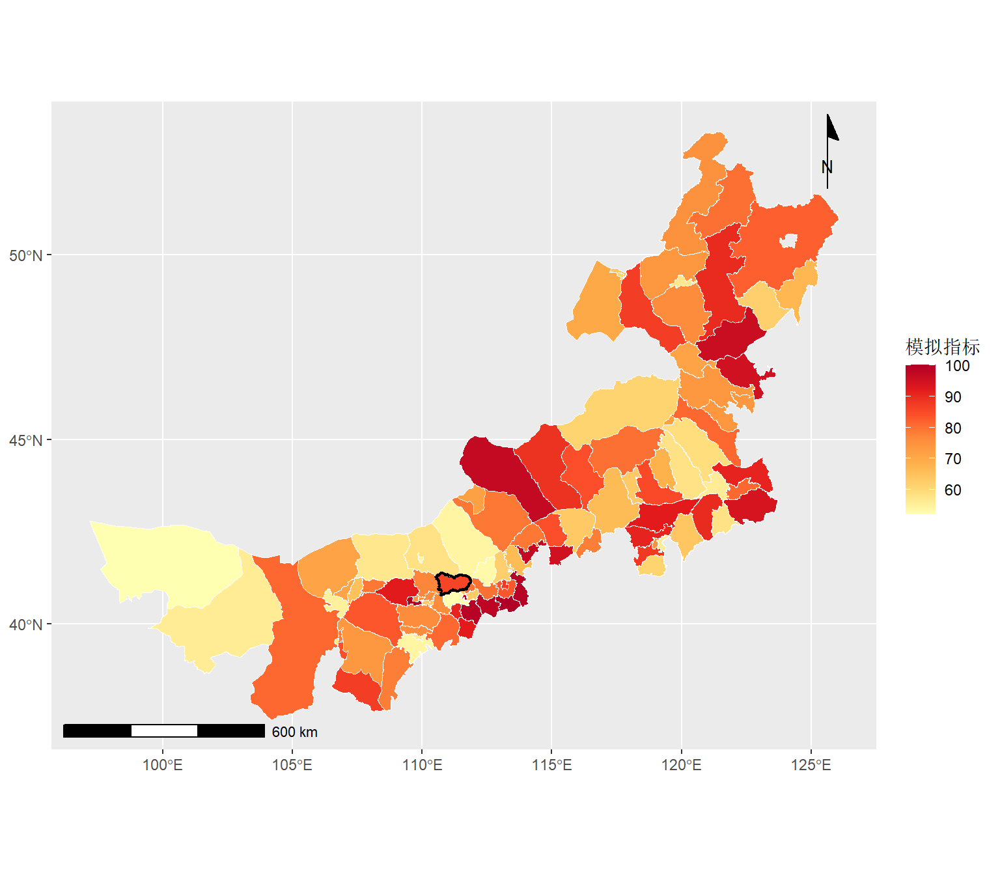

Code
library(sf)
library(ggplot2)
library(dplyr)本讲介绍如何在 R 中读取、整理并绘制中国县级行政区划地图。核心思路是：把空间数据理解为带有几何信息的数据框。在这个基础上，可以用 dplyr 整理属性表，用 ggplot2 绘制地图，用 sf 处理空间对象。
sf::st_read() 读取空间数据的方法。sf 对象与普通数据框的关系。dplyr 中 filter()、mutate()、select()、group_by()、summarise() 的基本语法。ggplot2::geom_sf() 绘制空间面数据的方法。说明：本讲中的“区号”按县级行政区划代码理解，即数据表中的
dt_adcode。例如武川县的县级行政区划代码为150125。它不是电话区号。
数据文件下载
本章使用中国区县级 Shapefile。Shapefile 应按组成文件分别下载，并放在同一个项目工作目录中。
请分别下载以下文件：
| 文件 | 作用 | 下载链接 |
|---|---|---|
china.shp |
几何图形文件，存储点、线或面边界 | 下载 china.shp |
china.shx |
空间索引文件，用于快速定位几何对象 | 下载 china.shx |
china.dbf |
属性表文件，存储名称、代码等非空间信息 | 下载 china.dbf |
china.prj |
坐标参考系文件，说明坐标采用何种地理或投影系统 | 下载 china.prj |
china.cpg |
字符编码文件，说明中文等字符的编码方式 | 下载 china.cpg |
五个文件必须保持相同主文件名 china，并放在同一目录下。读取时只需要指定 china.shp，sf::st_read() 会自动关联同目录中的 .shx、.dbf、.prj 和 .cpg 文件。
Shapefile 文件组成
Shapefile 不是单个文件，而是一组同名、不同后缀的文件。上表中的 .shp 提供图形边界，.dbf 提供属性表，.prj 提供坐标参考系，.cpg 提供字符编码说明。二者及其他辅助文件共同构成“地图上每个区域是什么、在哪里、叫什么”的完整信息。
先加载三个核心包：
library(sf)
library(ggplot2)
library(dplyr)三个包的分工如下：
| 包 | 主要用途 |
|---|---|
sf |
读取、存储和处理空间数据 |
ggplot2 |
绘制图形，包括地图 |
dplyr |
对数据表进行筛选、变换、统计和合并 |
使用 st_read() 读取 Shapefile
china <- st_read("china.shp", quiet = TRUE)st_read() 是 sf 包中读取空间数据的核心函数。基本语法为：
st_read(dsn, quiet = FALSE)参数说明：
| 参数 | 含义 |
|---|---|
dsn |
数据源路径。读取 Shapefile 时，通常写 .shp 文件路径 |
quiet |
是否减少读取过程中的提示信息。TRUE 表示减少提示 |
赋值语句 china <- ... 的含义是：把右侧读取到的空间数据保存到名为 china 的对象中。之后所有绘图和数据整理都围绕 china 进行。
查看数据结构
head(china)head(china) 用于查看数据前 6 行。读入后的 china 是一个 sf 对象。它可以像普通数据框一样查看、筛选和新增变量，但它额外包含一列 geometry。
本数据主要字段如下：
| 字段 | 含义 | 示例 |
|---|---|---|
pr_name |
省级名称 | 内蒙古自治区 |
ct_name |
地市级名称 | 呼和浩特市 |
dt_name |
县级名称 | 武川县 |
pr_adcode |
省级行政区划代码 | 150000 |
ct_adcode |
地市级行政区划代码 | 150100 |
dt_adcode |
县级行政区划代码 | 150125 |
geometry |
县级行政区边界 | 多边形 |
对 sf 数据可以这样理解：
| 普通数据框 | sf 空间数据框 |
|---|---|
| 每一行是一条观测 | 每一行是一个地理单元 |
| 每一列是一个变量 | 普通变量 + geometry 几何列 |
| 不能直接画空间边界 | 可由 geom_sf() 识别并绘图 |
ggplot(china) +
geom_sf() 
这段代码采用 ggplot2 的“图层叠加”语法。
ggplot(china) 创建绘图对象，并指定默认数据为 china。
geom_sf() 添加空间图层。它会自动识别 sf 对象中的 geometry 列，因此不需要手动指定经度和纬度。
geom_sf() 中常用参数如下：
| 参数 | 含义 | 示例 |
|---|---|---|
fill |
面的填充颜色 | "grey92" |
color |
边界线颜色 | "white" |
size |
边界线粗细 | 0.04 |
alpha |
透明度，范围 0 到 1 | 0.6 |
注意：当 fill = "grey92" 写在 aes() 外部时，表示所有区域使用同一种固定颜色。
空间数据首先也是数据表。地图绘制之前，通常需要先对属性表做整理。dplyr 的作用就是用清晰的语法完成这些整理工作。
管道符 %>%
%>% 读作“然后”。它把左侧结果传给右侧函数的第一个参数。
例如：
china %>%
head()等价于：
head(china)管道符的优点是可以把多个步骤按从上到下的顺序写出
数据 %>% filter(条件)示例：
china %>% filter(pr_name == "内蒙古自治区")其中，== 表示“等于”。注意它不同于赋值符号 = 或 <-。
常见筛选条件如下：
| 写法 | 含义 |
|---|---|
pr_name == "内蒙古自治区" |
省名等于“内蒙古自治区” |
pr_name != "北京市" |
省名不等于“北京市” |
pr_name %in% c("山西省", "陕西省") |
省名属于给定集合 |
grepl("武川", dt_name) |
县名中包含“武川” |
grepl()：判断文本是否包含关键词
grepl() 是 R 的基础函数，用于判断一个字符串是否包含某个模式。基本语法为：
grepl(pattern, x)参数说明：
| 参数 | 含义 |
|---|---|
pattern |
要查找的关键词或正则表达式 |
x |
被查找的字符向量 |
例如，grepl("武川", dt_name) 会逐行判断 dt_name 中是否包含“武川”，并返回 TRUE 或 FALSE。filter() 再根据这个结果保留对应行。
将下方代码中的 my_home_code 改为目标县级行政区划代码。代码需要写成字符串，即用引号包围。
my_home_code <- "150125"写成字符串有两个好处：
my_county <- china %>%
filter(dt_adcode == my_home_code)代码逻辑如下：
china 是完整的全国县级空间数据。filter(dt_adcode == my_home_code) 保留代码等于 my_home_code 的行。my_county，即目标县级行政区的空间数据。如果输出为空，说明没有匹配到记录。常见原因包括：代码输入错误、误用了电话区号、漏写引号。
mutate()：新增标记变量
china_marked <- china %>%
mutate(is_home = ifelse(dt_adcode == my_home_code, "目标县级行政区", "其他地区"))mutate() 来自 dplyr，用于新增列或修改已有列。基本语法为：
mutate(.data, 新列名 = 表达式)在管道语法中常写为：
数据 %>% mutate(新列名 = 表达式)本例中新增了 is_home 列：
dt_adcode == my_home_code 为真时，取值为“目标县级行政区”。ifelse() 是 R 的基础函数，基本语法为：
ifelse(条件, 条件为真时的值, 条件为假时的值)根据变量填色
ggplot(china_marked) +
geom_sf(aes(fill = is_home), color = "white", size = 0.03) +
scale_fill_manual(
values = c("目标县级行政区" = "#D73027", "其他地区" = "grey92"),
name = NULL
) +
theme_minimal() 
这里的关键是 aes(fill = is_home)。
aes() 表示 aesthetic mapping，即“美学映射”。它把数据变量映射到图形属性上。fill = is_home 的含义是：根据 is_home 这一列的不同取值设置不同填充颜色。
固定颜色与变量映射的区别如下：
| 写法 | 含义 |
|---|---|
fill = "grey92" |
所有区域使用同一种固定颜色 |
aes(fill = is_home) |
根据 is_home 的取值决定颜色 |
scale_fill_manual() 用于手动指定填充颜色。基本语法为：
scale_fill_manual(values = c("类别1" = "颜色1", "类别2" = "颜色2"))其中，values 中的类别名称必须与变量中的实际取值一致。
my_province <- china %>%filter(pr_name == "内蒙古自治区")
province_marked <- my_province %>%
mutate(is_home = ifelse(dt_adcode == my_home_code, "目标县级行政区", "其他区县"))
ggplot(province_marked) +
geom_sf(aes(fill = is_home), color = "white", size = 0.2) 
地图通常需要基本制图要素，包括图题、图例、比例尺和指北针。比例尺和指北针可使用 ggspatial 包添加。
library(ggspatial)
ggplot(province_marked) +
geom_sf(aes(fill = is_home), color = "white", size = 0.2) +
annotation_scale(location = "bl", width_hint = 0.3) +
annotation_north_arrow(
location = "tr",
which_north = "true",
style = north_arrow_minimal
) 
新函数说明：
| 函数 | 作用 |
|---|---|
annotation_scale() |
添加比例尺 |
annotation_north_arrow() |
添加指北针 |
常用参数如下：
| 参数 | 所属函数 | 含义 |
|---|---|---|
location = "bl" |
annotation_scale() |
比例尺放在左下角 |
width_hint = 0.3 |
annotation_scale() |
比例尺宽度约为图幅宽度的 30% |
location = "tr" |
annotation_north_arrow() |
指北针放在右上角 |
which_north = "true" |
annotation_north_arrow() |
指向真北 |
style = north_arrow_minimal |
annotation_north_arrow() |
使用简洁指北针样式 |
面量图，也称分级设色图，是根据区域属性值给不同地理单元填充不同颜色的地图。其核心写法是：
geom_sf(aes(fill = 数值变量))下面构造一个模拟指标，演示面量图的基本方法。
set.seed(123)
province_value <- my_province %>%
mutate(score = sample(50:100, n(), replace = TRUE))
ggplot(province_value) +
geom_sf(aes(fill = score), color = "white", size = 0.2) +
geom_sf(data = my_county, fill = NA, color = "black", size = 0.8) +
scale_fill_distiller(
palette = "YlOrRd",
direction = 1,
name = "模拟指标"
) +
annotation_scale(location = "bl", width_hint = 0.3) +
annotation_north_arrow(
location = "tr",
which_north = "true",
style = north_arrow_minimal
) 
代码说明：
set.seed(123) 固定随机数种子，使每次运行得到相同的随机结果。sample(50:100, n(), replace = TRUE) 从 50 到 100 中随机抽取数值，抽取次数等于当前数据行数。n() 在 mutate() 中表示当前数据的行数。scale_fill_distiller() 用 ColorBrewer 调色板设置连续变量配色。palette = "YlOrRd" 表示使用 Yellow-Orange-Red 配色方案。direction = 1 表示使用默认颜色方向；改为 -1 可反转颜色方向。请提交一份 HTML 或 PDF 文件，包含以下内容：
dplyr 函数？每个函数在地图制作中承担什么作用？进阶要求：寻找一份真实统计数据，例如人口、GDP、降水量或空气质量数据，使用 left_join() 合并到空间数据后制作真实面量图。